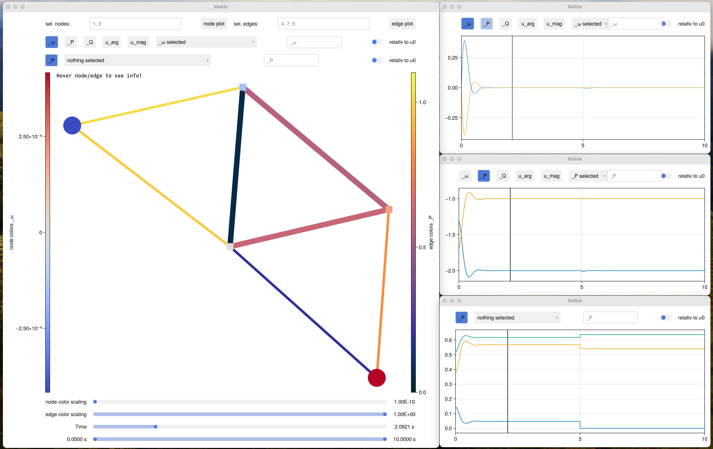

Feature walkthrough
Definition of Test Powergrid
In this example, we'll go through the main features of the NetworkDynamicsInspector package.
This package is all about inspecting the dynamic states of a network. To do so, we start by defining dynamic problem. The problem is stated in normal PowerDynamics.jl convention. This means, the edge states visible to the nodes are the complex currents (i_r, i_i) flowing into the node, the node states visible to the edges are the complex currents (u_r, u_i) established at the node.
using NetworkDynamics
using NetworkDynamicsInspector
using Graphs
using CairoMakie
using GraphMakie
using OrdinaryDiffEq
using DiffEqCallbacks
g = SimpleGraph(5)
add_edge!(g, 1, 2); add_edge!(g, 1, 4); add_edge!(g, 2, 3); add_edge!(g, 2, 4);
add_edge!(g, 2, 5); add_edge!(g, 3, 5); add_edge!(g, 4, 5);
ntypes = [:gen, :load, :gen, :load, :load]
node_color = map(t->t==:gen ? Makie.wong_colors()[5] : Makie.wong_colors()[2], ntypes)
fig, ax, p = graphplot(g; ilabels=repr.(1:5), node_color)
hidedecorations!(ax); hidespines!(ax)Here, the blue nodes represent generators while the orange nodes represent loads.
Next we can define our node models. The swing node is typical represenation of the swing quation and has two parameters, mechanical turbine power P and damping D. It has three states, the internal angle δ and both components of the complex voltage.
function swing_vertex!(dv, v, edges, (P, M, D), t)
u_r, u_i, ω = v
i = total_current(edges)
u = u_r + u_i * im
δ = angle(u)
Pel = real(u*conj(i))
dω = M * (P + Pel - D*ω)
du_r = -sin(δ)*ω
du_i = cos(δ)*ω
dv .= du_r, du_i, dω
nothing
end
swing = ODEVertex(; f=swing_vertex!, dim=3, mass_matrix=1.0, sym=[:u_r, :u_i, :ω], psym=[:P, :M, :D])The load vertices is implemented as a constraint. It just forces u_r and u_i such that P=u⋅i*:
function pq_vertex!(dv, v, edges, (P,), t)
current = total_current(edges)
voltage = v[1] + v[2] * im
residual = P + voltage * conj(current)
dv[1] = real(residual)
dv[2] = imag(residual)
nothing
end
load = ODEVertex(; f=pq_vertex!, dim=2, mass_matrix=0.0, sym=[:u_r, :u_i], psym=[:P])Both vertices need a helper function to find the total current inflow at the node:
function total_current(edges)
# ND convention: all flows entering a node are positive
current = 0.0im
@inbounds for e in edges
current += e[1] + e[2]*im
end
current
endFor the edge model, we take the RMS represenation (static edge) of an edge with complex admittance (RL line), where the admittance Y is the onlye parameter.
function complex_admittance_edge!(e, v_s, v_d, (Y,), t)
src_voltage = v_s[1] + v_s[2] * im
dst_voltage = v_d[1] + v_d[2] * im
# If current is flowing away from the source, it is negative at the source.
complex_current = Y * (dst_voltage - src_voltage)
e[1] = real(complex_current)
e[2] = imag(complex_current)
nothing
end
edge = StaticEdge(; f=complex_admittance_edge!, dim=2, sym=[:i_r, :i_i], psym=[:Y], coupling=:antisymmetric)Now we can finally create the nd object, the parameters and simulate:
vertex_list = map(t->t==:gen ? swing : load, ntypes)
nd = network_dynamics(vertex_list, edge, g)
p_vert = [( 2.0, 10., 1.0), # inj and damping gen 1
(-0.5, NaN, NaN), # draw load 2
( 1.0, 10., 1.0), # inj and damping gen 3
(-0.5, NaN, NaN), # draw load 2
(-2.0, NaN, NaN)] # draw load 2
# fillig up with `NaN` here helps us to achive concret parameter array eltype which is important for performance
@assert isconcretetype(eltype(p_vert))
# the edges are homogenious
p_edge = [5im for i in edges(g)]
# network apraemters are the combination of vertex and edge parameters
p = (p_vert, p_edge)
pr = PRecord(p)Not the usage of the PRecord struct: in order to reconstruct states later, it is sometimes necessary to know the parameters at that point in time. PRecord exists to "preserve" the parameters. Use record!(pr, integrator) within your callbacks where you change the parameters. Later on pr(t) can be used to restore the parameters for every timepoint of the solution object.
For the initial condition, we first initialize everything to 0 and than rais all the real parts of the voltage to 0
u0 = zeros(length(nd.syms))
u0[idx_containing(nd, r"^u_r")] .= 1
cbf = function(int)
int.p[2][4] = 0 # set conductivity of edge 1 to 0, basicially cutting the line
record!(pr, int) # store the changed parameter in the `PRecord`
auto_dt_reset!(int) # reset the stepssize of the integrator
end
callback = PresetTimeCallback(5, cbf)
prob = ODEProblem(nd, u0, (0, 10), deepcopy(p); callback)
sol = solve(prob, Rodas5P())
@assert SciMLBase.successful_retcode(sol) "Solver error: $(sol.retcode)"Statelensens
The main purpose of this package is to inspect variables. The entry point for that are the functions vstatef and estatef. Those function create a so called "lens" which helps us to retrieve a certain state
lens = vstatef(sol, pr, 1, :u_r) # creates lens to access state "u_r" of vertice 1
lens(1.1) # evaluates lens at time 1.1 to get state at that point.0.9966821538249486It is possible to create lenses wich access multiple variables or multiple indices at once:
estatef(sol, pr, 1, :src_i_r)(1.1) # retrives state `:src_i_r` for edge 1 at time 1.1
estatef(sol, pr, 1, [:src_i_r, :src_i_i])(1.1) # retrives states `:src_i_r` and `:src_i_i` for edge 1 at time 1.1
estatef(sol, pr, 1:2, [:src_i_r, :src_i_i])(1.1) # does the same for edges 1 and 2
estatef(sol, pr, 2, [:src_i_r, :src_i_i])(sol.t) # gives both states for entiere time series at onceThose commands can be used to plot stuff relatively quickly, especially edge states which are much harde to aquire
ts = range(sol.t[begin], sol.t[end], length=1000) # more intermediate points to make graph smoother
fig, ax, p = lines(ts, vstatef(sol,pr,1,:ω)(ts))
lines!(ts, vstatef(sol,pr,3,:ω)(ts))On its own, that nice but it isn't really powerful. The interesting thing is now, that you can create your own "recipes" for intermediade states which are not really accessible. For example, lets consider you're interested in the voltage angle rather than the _r and _i components:
@register_vstatelens :u_arg => atan(:u_i, :u_r)
lines(ts, vstatef(sol,pr,1,:u_arg)(ts))you can delete the defined lens again
empty_lenses!()lines(ts, vstatef(sol,pr,1,:u_arg)(ts)) would error now.
It is also possible to define more complex rules based on patternmatching
@register_vstatelens r"^(.*)_mag$" => sqrt(s"\1_r"^2 + s"\1_i"^2)
@register_vstatelens r"^(.*)_arg$" => atan(s"\1_i", s"\1_r")This registers a new NAME_mag and NAME_arg state, whenever there exists NAME_r and NAME_i
For more advance usage, you can define even more complex rules. Don't worry you don't need to fully understand the following code. What it does, it registers new virutal states _i_r and _i_i for each node, which are calculated based on the total current sum of the incomming edges.
Per convention, it uses the leading underscore to mark a "virtual" or "derived" state.
register_vstatelens!(r"^_i_([ri])$") do sol, idx, state
m = match(r"_i_([ri])$", string(state))
part = m[1] == "i" ? imag : real
let part=part
(gd, p, t) -> begin
i = total_current(get_dst_edges(gd, idx))
part(i)
end
end
end
@register_vstate :_i_r :_i_iWith that new definition in place, we can define even more virtual states:
@register_vstatelens :_S => (:u_r + :u_i*im)*(:_i_r - :_i_i*im)
@register_vstatelens :_P => real(:_S)
@register_vstatelens :_Q => imag(:_S)Now we have easy acces to plot the measured power of our devices:
fig, ax, p = lines(ts, vstatef(sol,pr,1,:_P); label="Node 1")
lines!(ts, vstatef(sol,pr,2,:_P); label="Node 2")
lines!(ts, vstatef(sol,pr,3,:_P); label="Node 3")
lines!(ts, vstatef(sol,pr,4,:_P); label="Node 4")
lines!(ts, vstatef(sol,pr,5,:_P); label="Node 5")
axislegend()The good thing is, you don't need to define all those on you own. Just reuse existing lenses. Call
register_pd_lenses!()To get a predfined lest of lenses which match the powerdynamics conventions. Most notably you get an additional vertex state :_ω for the estimated, instantanious frequency (based on the derivative of the voltage).
For the edges there is :_src_P and :dst_P to get the power at both ends. :_P gives you the maximum of those. Similarily there are Q and S for edges too.
We can use those to easily inspect the powerflow on the different edges in the network:
fig, ax, p = lines(ts, estatef(sol,pr,1,:_P)(ts); label="Edge 1")
lines!(ts, estatef(sol,pr,2,:_P)(ts); label="Edge 2")
lines!(ts, estatef(sol,pr,3,:_P)(ts); label="Edge 3")
lines!(ts, estatef(sol,pr,4,:_P)(ts); label="Edge 4")
lines!(ts, estatef(sol,pr,5,:_P)(ts); label="Edge 5")
lines!(ts, estatef(sol,pr,6,:_P)(ts); label="Edge 6")
lines!(ts, estatef(sol,pr,7,:_P)(ts); label="Edge 7")A task which would be super annoying using the standard ND.jl methods.
For inspection, there are a few more interesting functions:
listvstates(sol, 1) # shows you all states available for vertex 1
listvstates(sol, 1:2) # shows you all states available for vertex 1 AND 2 (intersection of both)
listvstates(sol) # shows you all states available for ALL vertices in the network
listestates(sol, 1) # same, but for edge states8-element Vector{Symbol}:
:dst_i_arg
:dst_i_mag
:src_i_arg
:src_i_mag
:dst_i_r
:dst_i_i
:src_i_r
:src_i_iif you want it more compact, there is
printvstates(sol, 1)7-element Vector{String}:
"_P"
"_Q"
"_S"
"_i_*"
"_ω"
"u_*"
"ω"which is similar but supresses all the _r, _i, _arg, _mag endings.
Interactive
To make use of the interactive features please download script and call
inspect_solution(sol,pr)

This page was generated using Literate.jl.